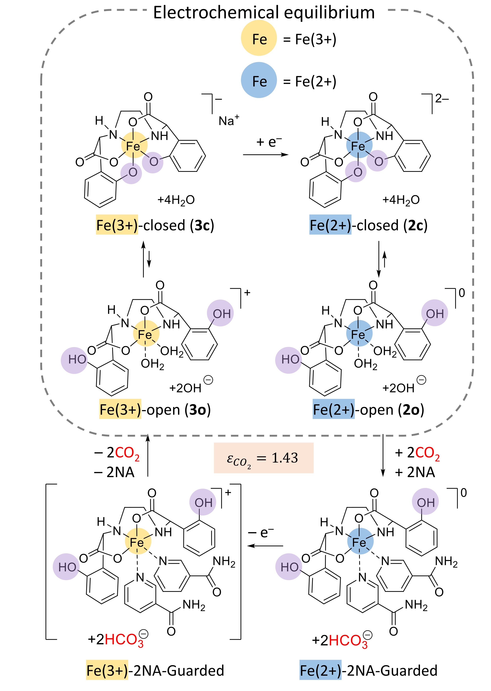
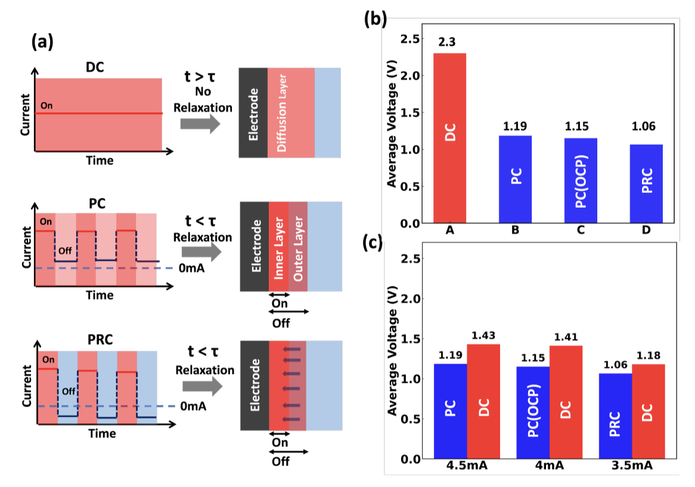
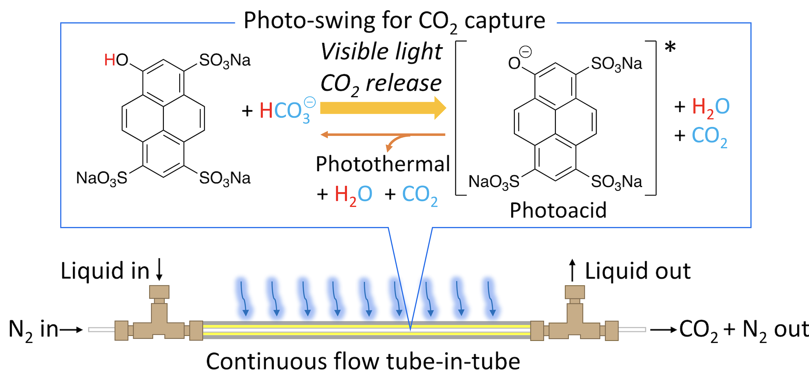

Research
Molecularly Programmed Separations
We study how molecular structure, interfacial organization, and process operation jointly determine selective capture, transfer, and release. Rather than treating chemistry, transport, and process design as separate problems, we examine their coupling across scales to establish predictive principles for selective, reversible, and adaptable separation systems.
Molecular Recognition
Encoding selectivity, reversibility, and responsiveness through molecular architecture and state.
02 · Interfacial ScaleDynamic Interfaces
Resolving how solvation, organization, reaction, and transport reshape selectivity in time and space.
03 · Process ScaleContinuous Processes
Translating molecular function into immobilized, cyclic, flow-based, and automated separation systems.

Select the figure to view it at full resolution.Molecular Recognition
We design molecular systems that control selective interactions and transport through tunable structure, environment, and chemical state. Our work examines how molecular architecture, solvation, cooperative interactions, and responsive behavior govern recognition, reversibility, and selectivity in complex chemical environments.
We seek general design principles that connect molecular-scale behavior to separation performance across capture, transfer, and release. By considering thermodynamics, kinetics, and regeneration together, we develop adaptable molecular platforms for a broad range of separation challenges.
- Preorganization and cooperative binding
- Competitive selectivity
- Reversible capture and release
- Responsive coordination states

Select the figure to view it at full resolution.Dynamic Interfaces
Molecular recognition is expressed through interfaces where solvation, speciation, aggregation, electrostatic fields, reaction, and transport are coupled. We investigate liquid–liquid, liquid–solid, membrane, and electrochemical interfaces to determine when molecular selectivity is preserved, amplified, transformed, or erased.
By separating reaction, diffusion, and relaxation timescales, we examine transient selectivity, uptake–release asymmetry, and operation away from equilibrium. These studies connect molecular behavior to the interfacial pathways that determine observable separation performance.
- Interfacial speciation and organization
- Coupled reaction–transport
- Time-dependent selectivity
- Uptake–release asymmetry

Select the figure to view it at full resolution.Continuous Processes
We translate molecular and interfacial mechanisms into immobilized, cyclic, and flow-based separation systems. Residence time, interfacial area, mass transfer, regeneration, and feedback control become co-design variables rather than downstream constraints.
Automated platforms provide reproducible kinetic measurements, rapid comparison of operating conditions, and direct tests of whether a molecular advantage survives repeated cycling and continuous operation.
- Immobilized separation systems
- Flow contactors and reactors
- Residence-time control
- Automated experimentation
Questions That Connect the Program
The molecular platform and target mixture may change, but the program is organized around four recurring scientific and engineering questions.
Where is selectivity encoded?
We identify the structural, chemical, and environmental features that distinguish competing species.
What does the interface change?
We determine how organization, solvation, and transport preserve or obscure molecular recognition.
Can dynamics create new separation windows?
We examine whether transient states and controlled timescales reveal selectivity not apparent at equilibrium.
What survives continuous operation?
We test reversibility, regeneration, stability, and throughput under repeated and process-relevant conditions.
Application Space
We apply this framework wherever selective capture, transfer, or release is limited by coupled molecular and transport phenomena. Current and emerging projects span ion recovery, membrane and electrochemical separations, gas and molecular capture, resource recovery from complex mixtures, and stimulus-controlled separation processes.
- Ion and molecular separations
- Complex liquid mixtures
- Membrane and interfacial transport
- Resource recovery and recycling
- Electrochemical and photochemical control
Molecules, Interfaces, and Processes—Studied Together
Our aim is to determine how molecular information survives across scale and becomes useful separation performance. We welcome collaborations that connect molecular design, interfacial characterization, transport analysis, and process development.
View Publications Contact the Group